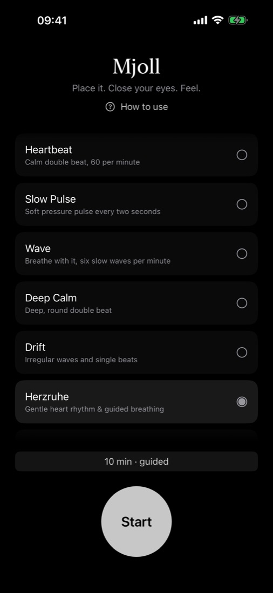
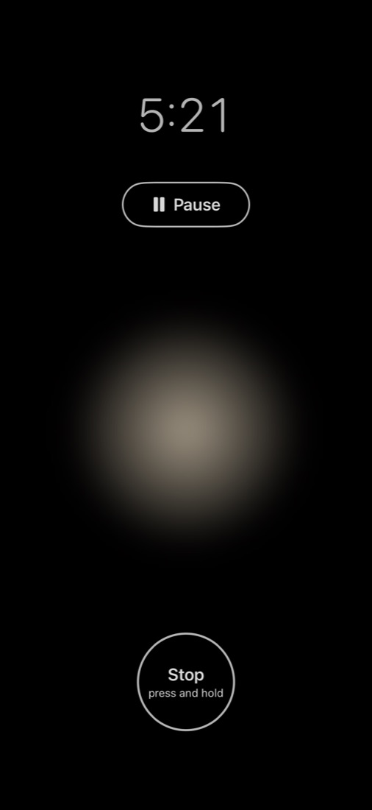
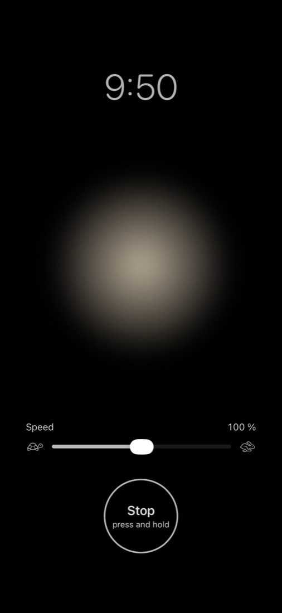
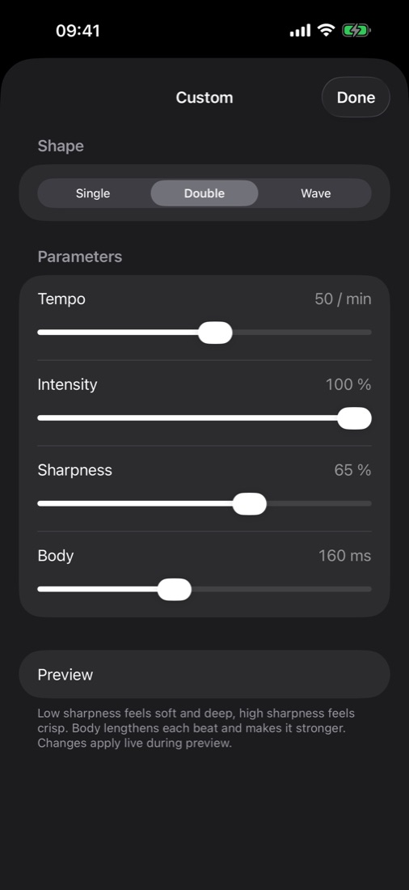

Mjoll
Place it. Close your eyes. Feel.
Mjoll is a calm iPhone app for haptic meditation. Gentle vibration patterns guide your attention – no sound, nothing to watch. Choose a program, set the time, close your eyes and feel.




Where to place it
You feel it best where your iPhone touches bone.
- Upper chest – rest your iPhone high on your breastbone, just below your throat. Sitting or lying down, screen up or down.
- Hand – hold it loosely in your open palm.
Ways to use it
- Meditation – let the pulse be your anchor. When your mind wanders, return to the vibration.
- Breathwork – choose Wave. Breathe in as it rises, breathe out as it fades.
- Guided – Herzruhe (German for “heart at rest”) takes ten minutes: a gentle heart rhythm to arrive, slow guided breathing, then a quiet fade.
- Wind down – before sleep, pick a calm program and a short duration. The session ends on its own.
Set the speed of each program to your own pace – Mjoll remembers it.
Mjoll is a wellness and relaxation app. It is not a medical device and does not diagnose, treat or prevent any condition.